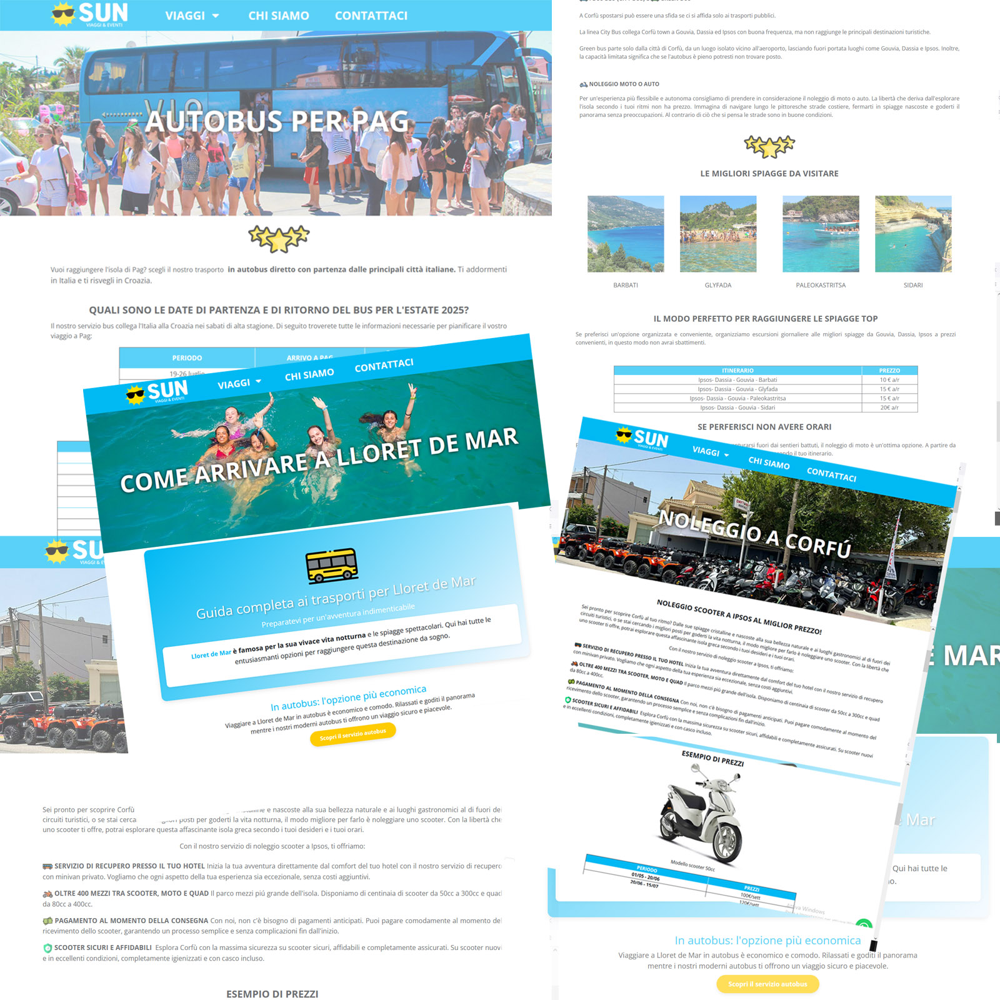
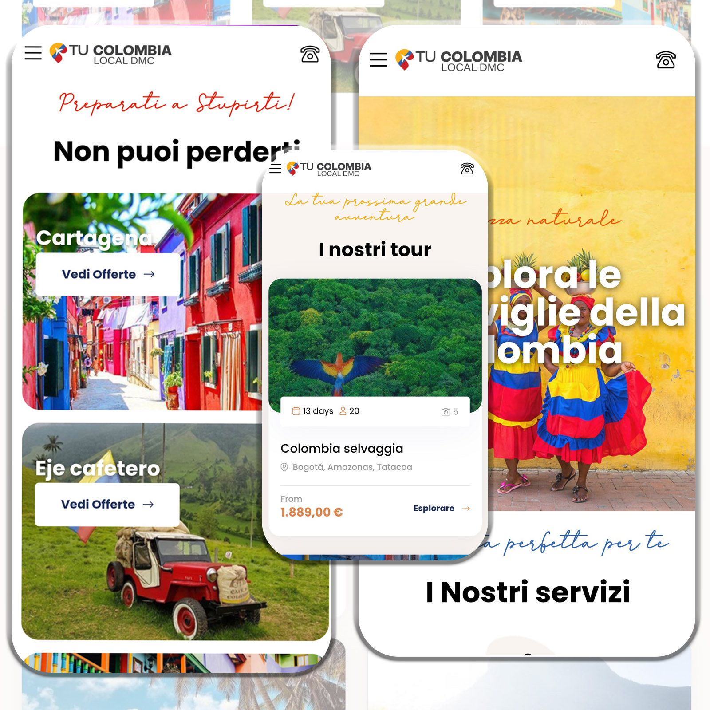
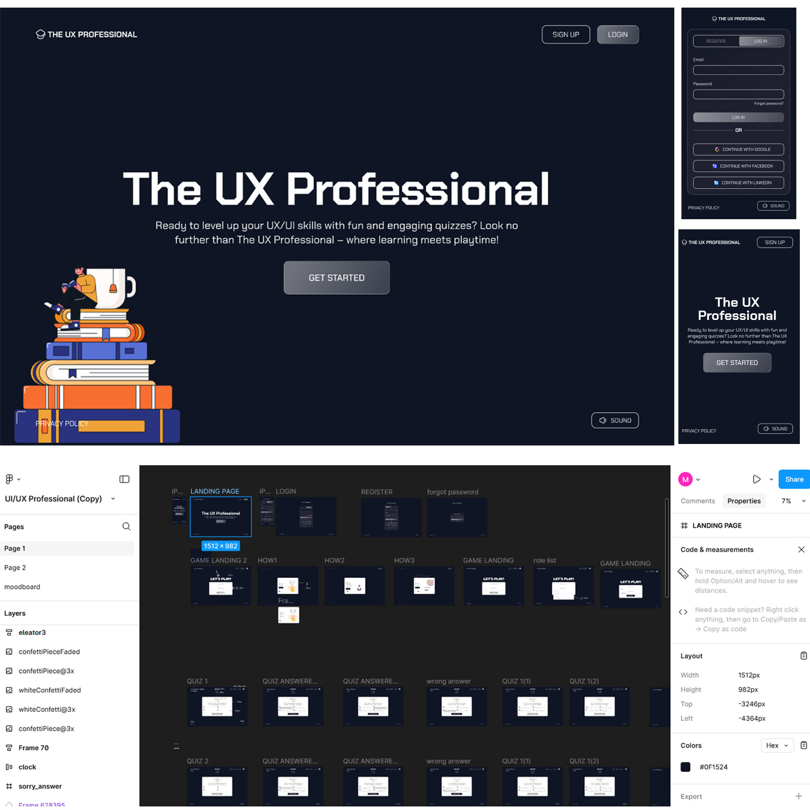
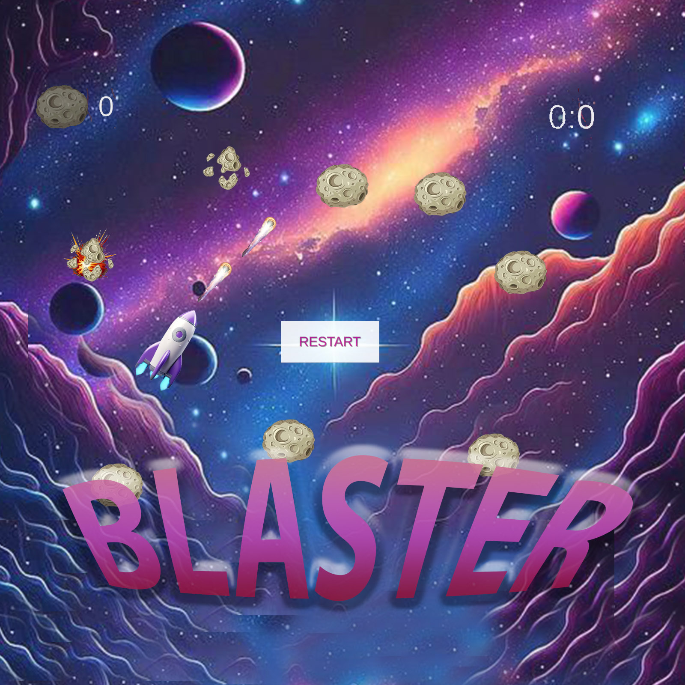
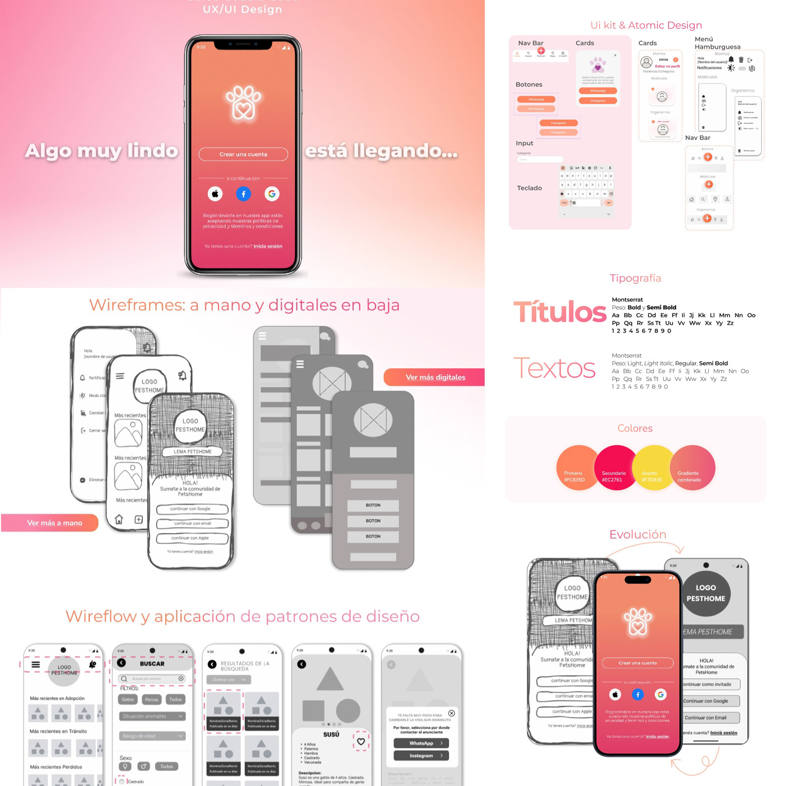
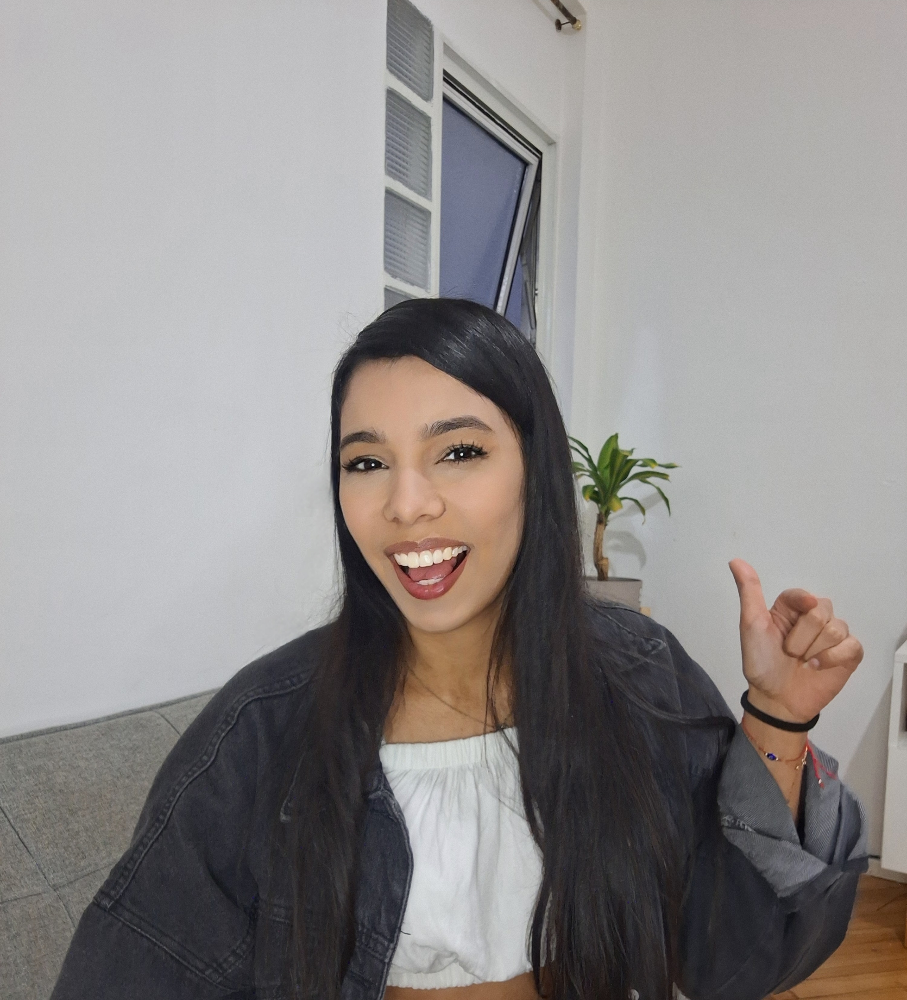

Più di 3 anni di esperienza. Designer e sviluppatrice focalizzata su UX/UI e sviluppo frontend Nata in Venezuela, residente in Italia 🇮🇹. Specializzata nello sviluppo di applicazioni web uniche. Laureata in Risorse Umane.

Ho sviluppato tra le 10 e le 15 landing pages per un tour operator che si rivolge a giovani viaggiatori, strutturando il contenuto in modo chiaro e ottimizzato. Mi sono occupata dell'organizzazione dei testi, della gerarchia visiva e dell'implementazione di ciascuna pagina per garantire un'esperienza utente fluida e coinvolgente.

Ho sviluppato un progetto in WordPress utilizzando Elementor, personalizzando la piattaforma e adattando i dettagli in base alle esigenze del cliente. Sebbene il progetto non sia stato completato a causa della mancanza di tempo da parte del cliente, ho lasciato una base strutturata e funzionale per una futura implementazione.

Ho sviluppato diverse landing pages in Figma, focalizzandomi sull'esperienza utente (UX) per professionisti del settore. Questi design includevano la strutturazione visiva delle pagine e l'integrazione di moduli per l'inserimento di dati specifici, mirati alla raccolta di informazioni relative al gioco. L'obiettivo era facilitare un flusso di interazione chiaro ed efficiente, ottimizzando la cattura dei dati in modo intuitivo e funzionale.

Ho sviluppato un videogioco 2D in Unity ispirato al classico Asteroids, utilizzando C# per programmare tutta la logica del gioco. In questo progetto, mi sono occupata del movimento fluido della navetta spaziale, della generazione casuale degli asteroidi, del sistema di collisioni e della meccanica di tiro. Ho anche implementato effetti visivi di base, semplici animazioni e suoni che arricchiscono l'esperienza di gioco.

Ho creato un mockup e un prototipo interattivo per un sistema di gestione delle adozioni a Buenos Aires, con l'obiettivo di ottimizzare l'esperienza degli utenti durante il processo. Ho utilizzato Figma per progettare un'interfaccia intuitiva, strutturando le informazioni in modo chiaro e accessibile. Il prototipo includeva interazioni chiave per simulare il flusso di navigazione, facilitando la validazione del design prima dello sviluppo.
Mi chiamo Maria Perez, ho 27 anni e sono venezuelana. Ho iniziato a programmare in modo autodidatta all'età di 18 anni e, nel corso degli anni, ho seguito vari corsi che mi hanno permesso di migliorare e crescere nella mia carriera.
Finora, ho lavorato esclusivamente come freelancer, ma ho anche collaborato a diversi progetti all'interno della stessa azienda. Questo mi ha permesso di affrontare sfide costanti, imparare da nuove esperienze e mantenere alta la motivazione con obiettivi che mi spingono a migliorare continuamente.
Sono una professionista in costante evoluzione, appassionata delle sfide e dell'apprendimento continuo. Finora ho lavorato in modo indipendente, ma cerco di integrarmi in un'azienda dove possa applicare le mie competenze in programmazione, UX/UI e gestione delle risorse umane in un ambiente collaborativo.
Il mio obiettivo è continuare a svilupparmi professionalmente, offrire soluzioni innovative e realizzare progetti di alta qualità.
